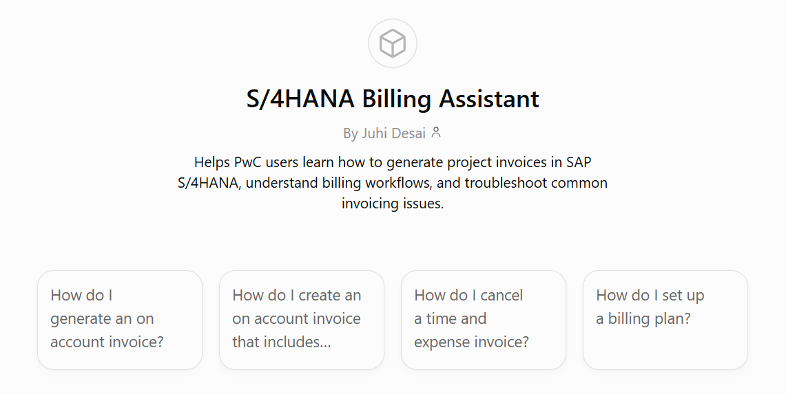
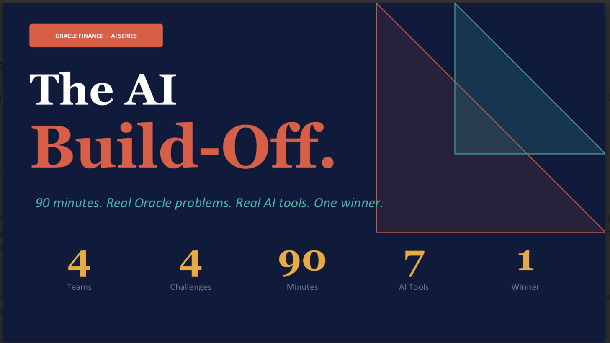
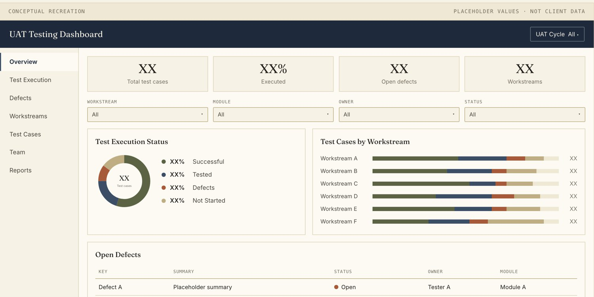
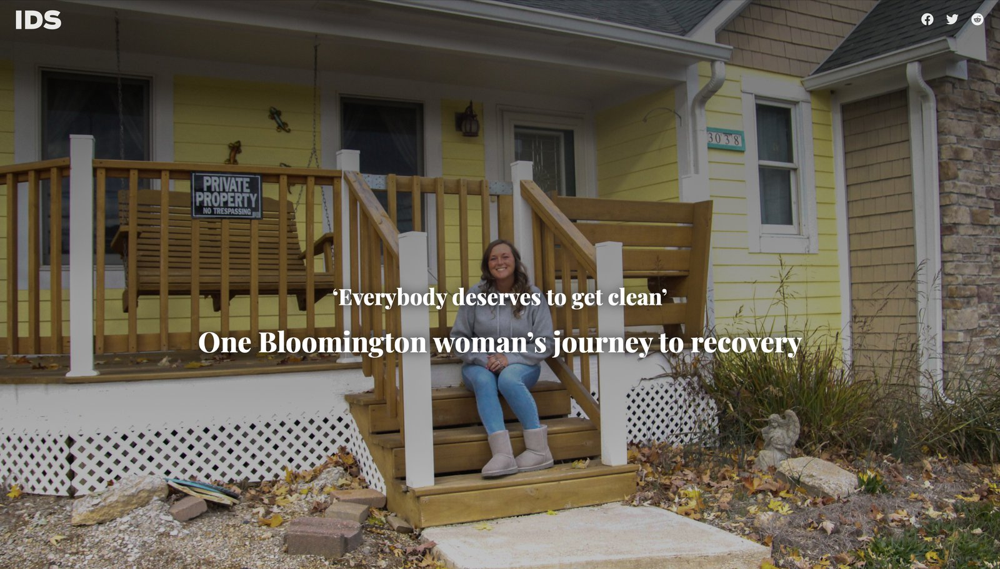

Selected Work
Projects
Sailing / Beta Product
Current
A live sailing product for finding crew opportunities, building trusted profiles, and creating portable sailing history through confirmed sails.
View live product
AI / Productivity
AI Workflow Assistants
Three Custom GPTs shaped with documentation, instructions, and testing to make information easier to find.
View project
AI / Adoption
AI Adoption Program
Trained 30+ PwC professionals to build with AI through hands-on workshops, practical use cases, and a case competition.
View project
Oracle Cloud / PwC
UAT Dashboard
Built a Jira/Xray workflow and dashboard to organize UAT testing by ownership, workstream, module, and status, giving the team a real-time view of progress and exceptions.
View project
Media / Student Newsroom
Indiana Daily Student
Two interactive editorial features, co-designed and co-developed inside an existing publication template.
View project
Concepts
Exploring ideas at the intersection of technology, people, and everyday life.